The Smith Made Experience
One wedding day, told in wood
This page moves when you do. Scroll, and a wedding day unfolds piece by piece — every arch, wall, and keepsake below handbuilt in our Greenville shop and staged the way it could look at your venue.
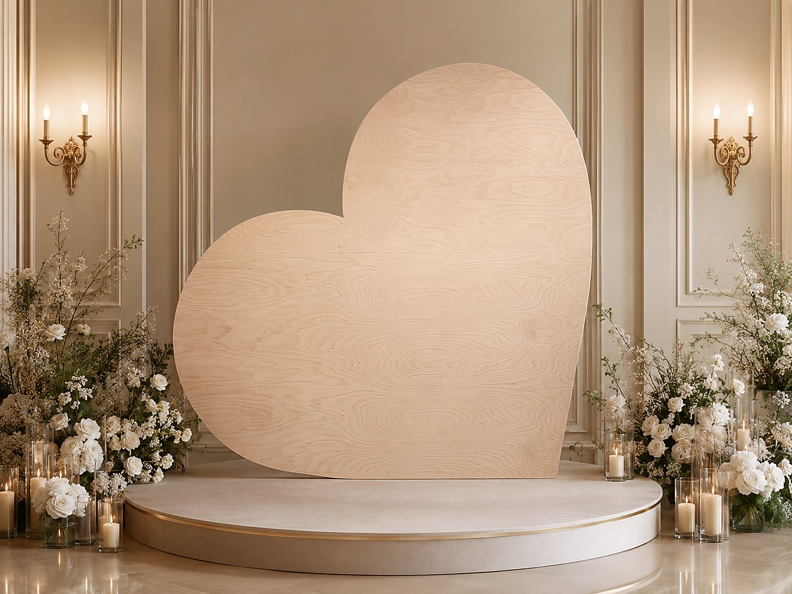
The Film
Played by your scroll
This isn't a video that plays at you. Scroll forward and the day moves forward; scroll back and it rewinds. Take it at your own pace — the pieces will wait.
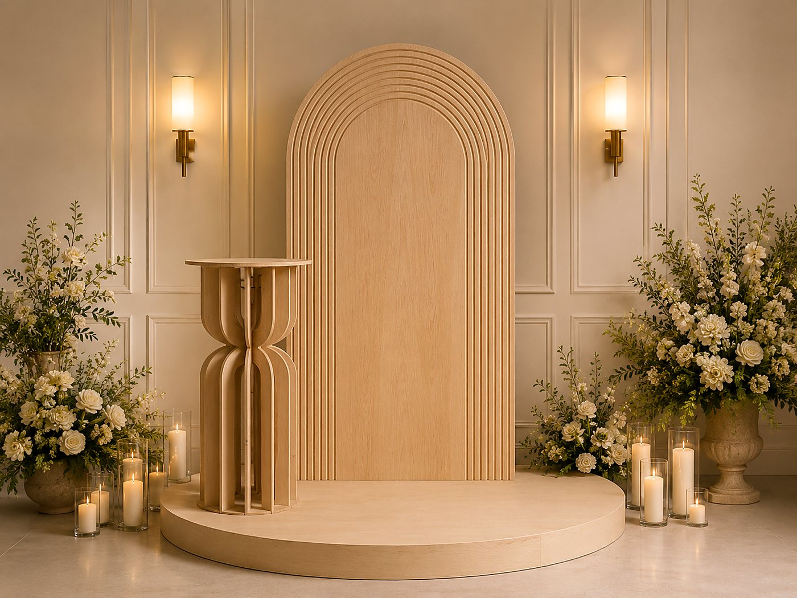
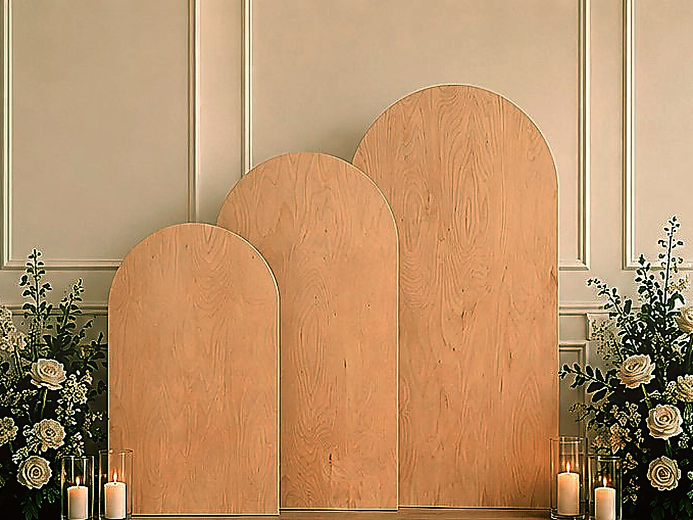
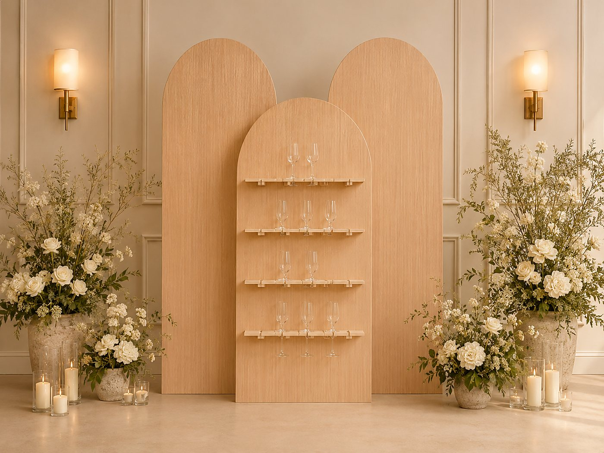
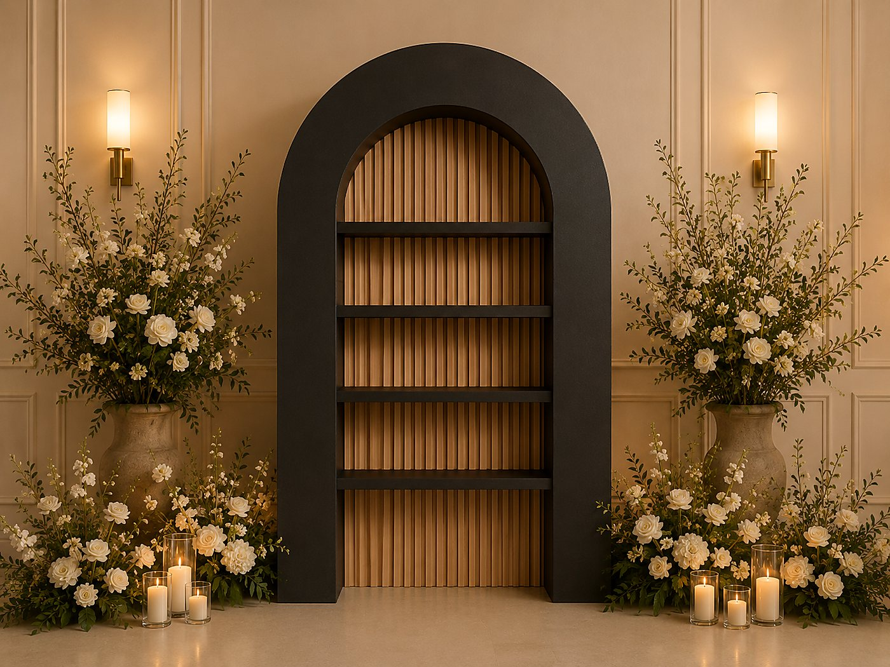
The Craft
Carpenter‑scale, camera‑ready
Seven-foot arches. Seating charts that stand on their own. Pieces a calligraphy studio can’t make and a party-rental warehouse doesn’t carry — built in our shop, finished by hand, delivered to your venue.
Choose natural white oak, walnut stain, painted cream, or a blackened frame — or name a color and we’ll quote it for your day.
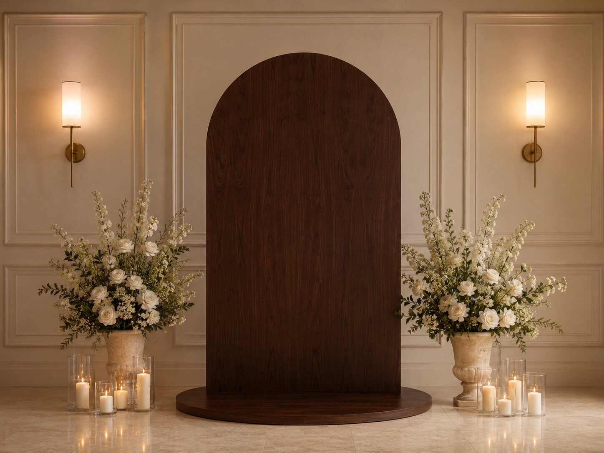
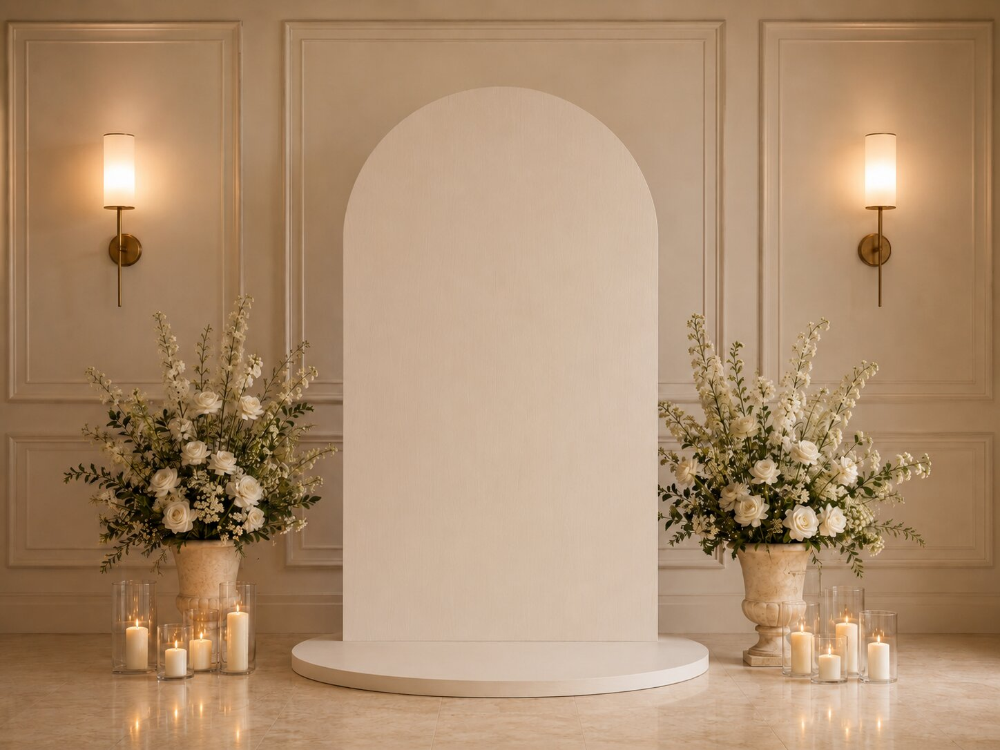
The Reel
The collection, in one pass
Keep scrolling — the shelf slides sideways. Tap any piece to see it in the collection.
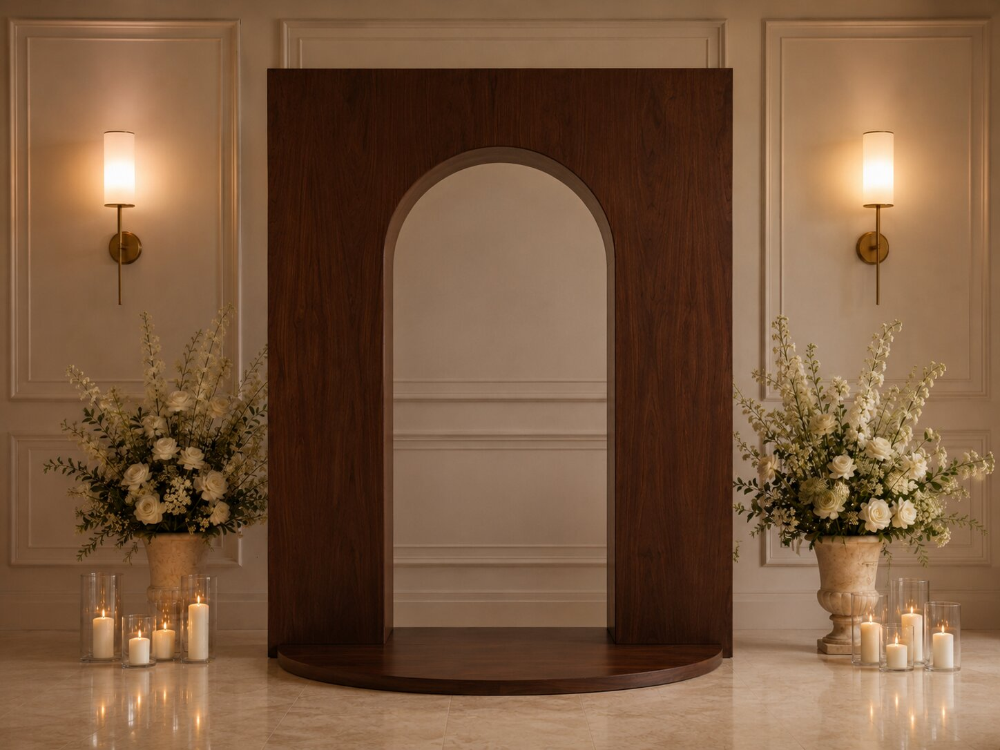
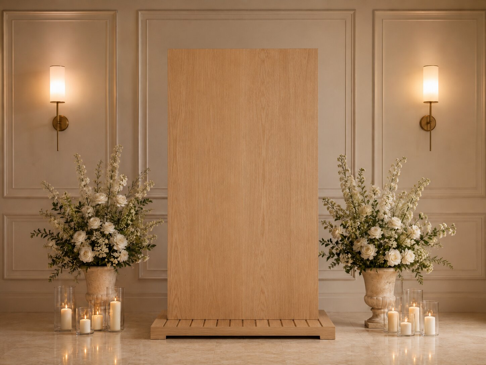
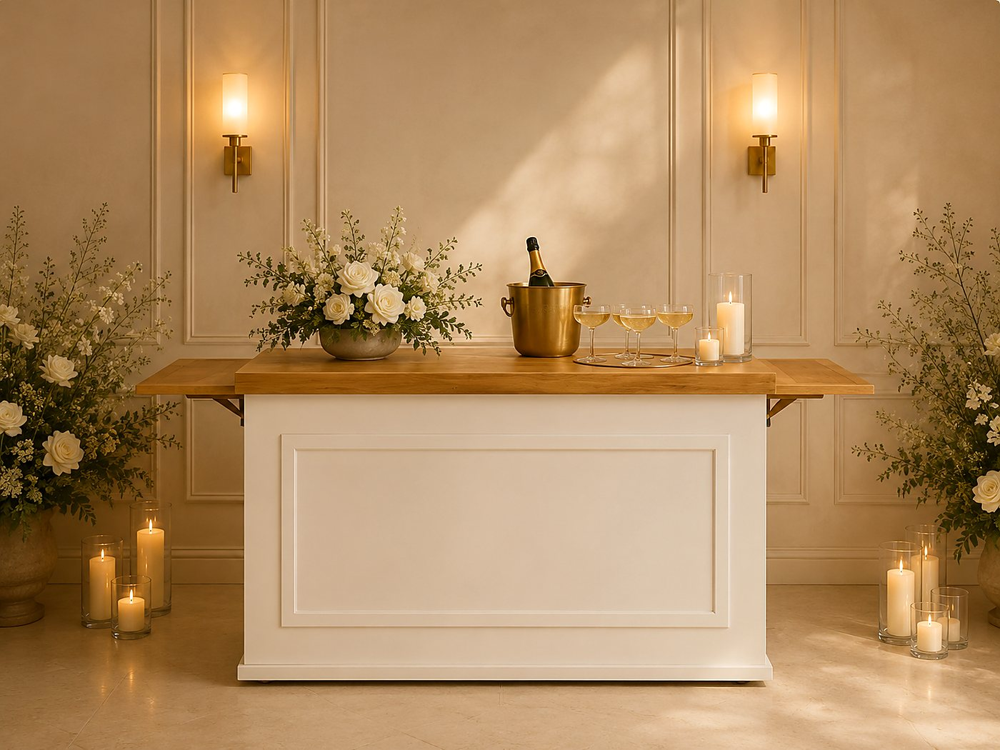
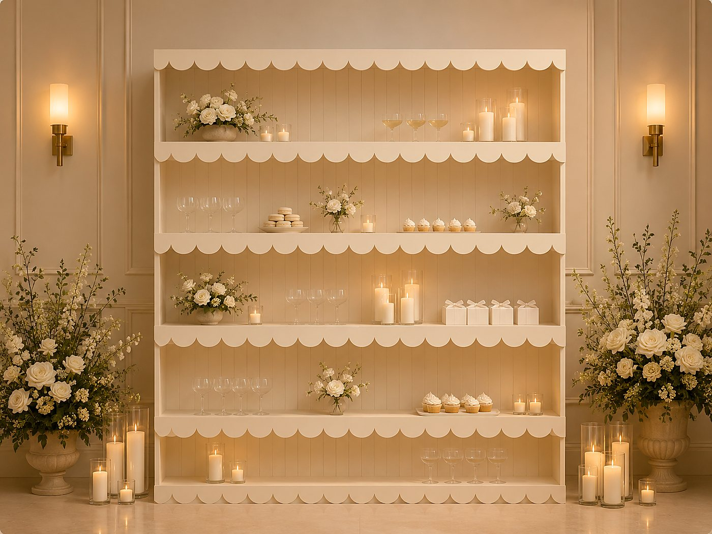
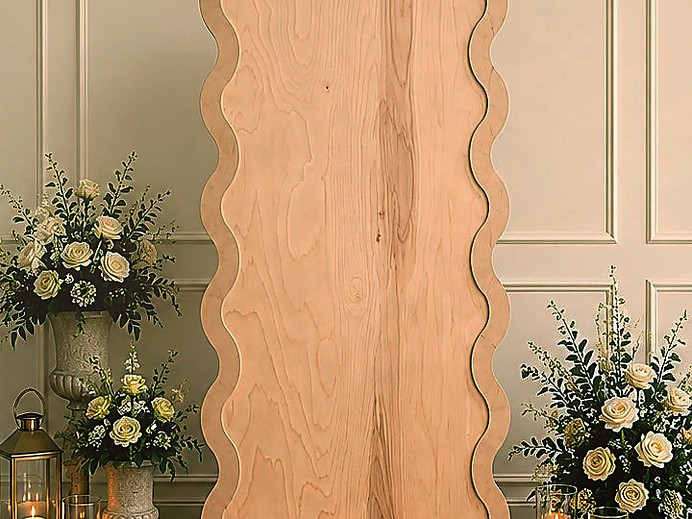
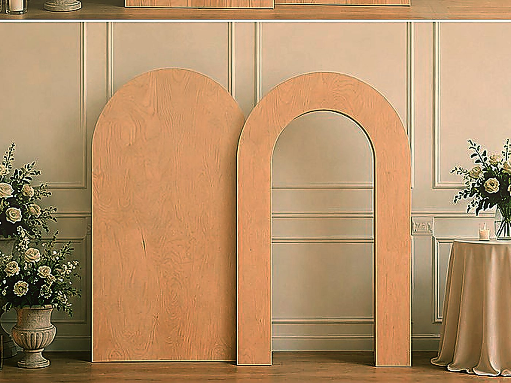
Your love story,
carved in wood.
Tell us your date and we’ll confirm it’s open and send a simple quote — usually within a day or two. Delivered across the Upstate, or pick up from our shop and save.